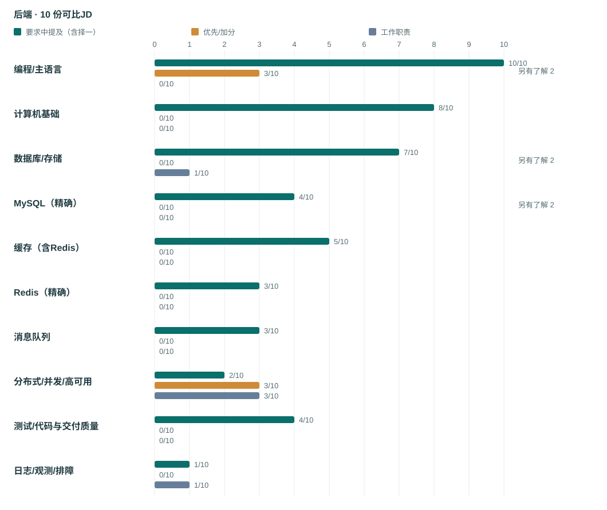
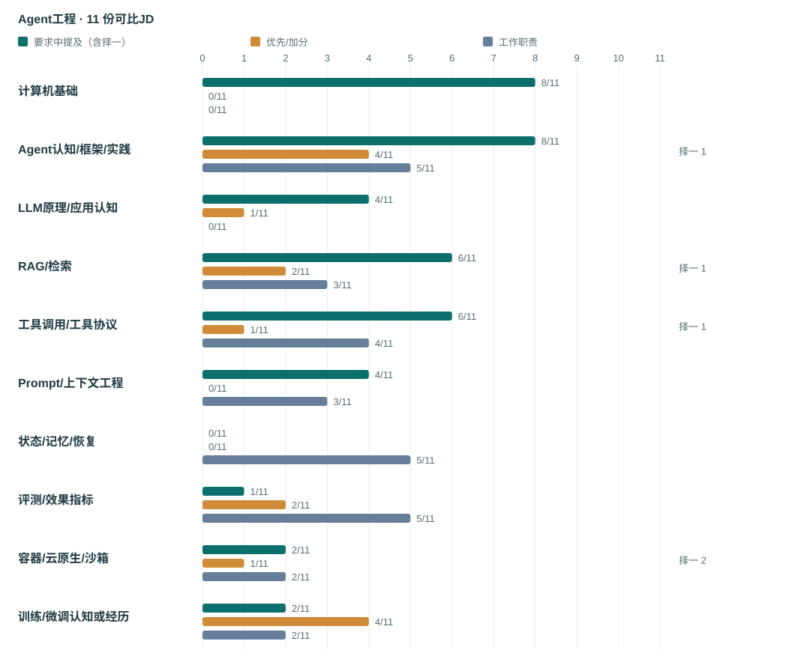
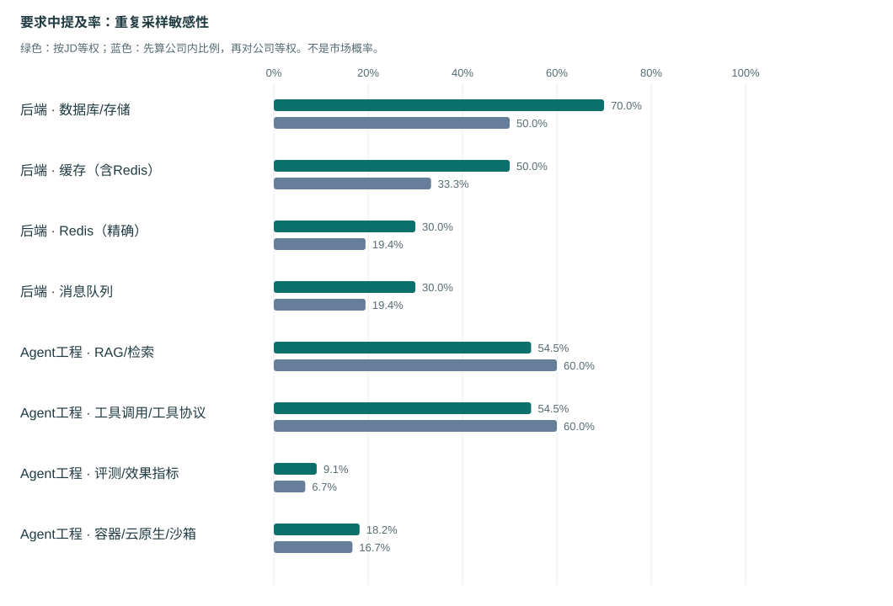

结论 01 先准备共同底座，再按岗位方向读技术
主语言/编程能力在后端 10/10、Agent 11/11、混合 3/3 中明确要求。具体语言大多按选项或示例列出，不能把Java、Go、Python、C++都列成必会。
代表性依据：JD03、JD20、JD22、JD25、JD3333 条 JD 线索中，24 份工程岗位全文可比（后端 10、Agent 工程 11、混合 3）。本页严格区分【明确要求】【择一选项】【单列了解】【优先加分】与【工作职责】，助你精准定位复习重心。
主语言/编程能力在后端 10/10、Agent 11/11、混合 3/3 中明确要求。具体语言大多按选项或示例列出，不能把Java、Go、Python、C++都列成必会。
代表性依据：JD03、JD20、JD22、JD25、JD33后端数据库/存储要求 7/10；精确Redis 3/10、MQ 3/10。MySQL另有单列了解 2/10。JD05只写分布式缓存、JD07只写存储/缓存，不能替换成Redis/MySQL。
代表性依据：JD01、JD02、JD05、JD06、JD07、JD20、JD21Agent组RAG要求中提及 6/11（含择一 1）；工具调用 6/11（含择一 1）。评测明确要求 1/11、优先 2/11、职责 5/11；状态/记忆/恢复职责 5/11。适合据此选读真实链路，但不能把全部职责改为入职硬门槛。
代表性依据：JD08、JD09、JD12、JD14、JD24、JD26、JD27JD26关注Runtime、容器、隔离、状态恢复与排障；JD23/JD27偏应用系统；JD15/16/28/29/32的训练算法岗位已排除。不能用研究岗的训练/论文要求覆盖全部Agent工程实习。
代表性依据：JD23、JD26、JD27、JD28、JD29混合组JD11/JD22/JD33分别偏Java开放平台、Go/Python应用后端、核心产品后端；三者都来自百度。单列用于看桥接要求，不与另外两组相加比较概率，也不能跨公司外推。
代表性依据：JD11、JD22、JD33百度7条、字节6条、阿里品牌家族4条合计17/24。腾讯云智研发JD02/JD21为不同年度的近似模板。下面同时显示JD提及率和公司等权结果；结论只解释本样本。
代表性依据：JD02、JD21统计口径提示：本表基于公开便利样本做精细分层（非全市场随机抽样）；“未在 JD 明示”不代表面试不考察，建议结合【面经与项目追问】配套使用。
图中每个技术主题包含三条横柱：深绿＝明确要求（含择一选项）、橙色＝优先/加分项、灰蓝＝工作职责。阅读时切勿将入职后的工作职责直接等同于投递硬门槛。

样本时间分布：年份未知 (2条)；2026 (6条)；2025 (2条) · 来源平台：企业在牛客发布的JD (5)；官方招聘 (1)；企业在实习僧发布的JD (1)；牛客平台招聘页，发布者企业身份未独立核验 (3)。
图中每个技术主题包含三条横柱：深绿＝明确要求（含择一选项）、橙色＝优先/加分项、灰蓝＝工作职责。阅读时切勿将入职后的工作职责直接等同于投递硬门槛。

样本时间分布：年份未知 (5条)；2026 (6条) · 来源平台：企业在牛客发布的JD (2)；官方招聘 (1)；自称雇员发布的招聘帖 (2)；企业在实习僧发布的JD (1)；牛客平台招聘页，发布者企业身份未独立核验 (4)；牛客招聘者原帖，企业任职身份为作者自述 (1)。
方向细分提示：JD26 属于 Agent Infra（容器、安全沙箱、Runtime 与故障恢复），本页纳入工程组统计，但其容器/内核要求并非普通 Agent 应用开发岗的统一门槛；JD24 则包含多方向择一条件。
单独列出这 3 份桥接岗位，避免把“Java AI 开放平台”、“Go/Python 智能体后端”与“C++/Go 核心搜索后端”混成同一张技能表。
| 岗位编号与名称 | 明确要求（硬门槛） | 优先/加分项 | 工作职责与阅读注意 |
|---|---|---|---|
| JD11 AI开放平台研发工程师实习生（J103363） | 数据结构与算法；操作系统；网络；数据库；Java/JVM/并发/集合；Spring/Spring Boot；RESTful；MySQL；Redis | 消息队列；Agent/RAG/Function Calling/MCP实践；LLM API/流式/Token计费；API网关/OAuth2/JWT/限流熔断/可观测；微服务/高并发/开源贡献 | 能力注册治理、模型路由、上下文、流式响应、鉴权配额 编码注记：MQ和Agent/RAG/MCP、网关安全/观测为优先，职责不升级为硬门槛。 |
| JD22 百度 大模型应用开发 后端开发工程师 实习生 | Golang/Python（正文并列熟练掌握）；数据结构算法/计算机原理；数据库/缓存/消息中间件；Docker/Kubernetes及云原生高性能服务平台经验；单元测试/集成测试 | 未单列 | AI平台后端与系统架构、Agent/RAG/Workflow功能、性能调优、稳定性和版本维护。 编码注记：原文并列熟练掌握Golang、Python，不擅改任选；Agent/RAG/Workflow在职责。 |
| JD33 百度 大模型应用后端研发实习生 GO/Python方向 J101073 | 数据结构/算法；C/C++或PHP/Go（原文）；Windows/Unix/Linux原理及系统支持开发；问题分析/学习/协作 | 编程竞赛/论文/专利；项目/软件开发流程；搜索/ML/多媒体/GIS/云/分布式知识技能 | 核心产品功能架构，算法研究实现优化，前瞻跟踪与AI平台开发。 编码注记：标题GO/Python与正文C/C++或PHP/Go不一致；正文不计Python。 |
先算各公司本样本中要求提及率，再对公司等权平均。降低重复采样权重；仍非市场概率或公司统一门槛。

腾讯云智研发单列独立雇主；腾讯与腾讯云合为腾讯品牌家族。百度/字节/阿里内部团队按品牌家族分组。 若把腾讯云智研发也并入腾讯品牌家族，总公司组由8变7；各方向内后端6、Agent5、混合1不变。
按岗位典型差异挑选，帮你快速看清不同梯队与细分方向的招聘原文写法：
Java基础与缓存/MQ/幂等的明确要求最具体；先看原文哪些是资格、哪些是优先。
发布/窗口：未显示发布日期；明确投递期2026-05-10—2026-08-10 · 来源：牛客平台招聘页，发布者企业身份未独立核验看Go/Java、RPC、缓存、MySQL优化怎样连接智能体业务；不要凭业务名推全部Agent门槛。
发布/窗口：2026-07-21（官网展示日期） · 来源：官方招聘看语言择一、CS/网络必备、数据库了解和分布式加分四者的层级。
发布/窗口：投递期2026-03-10至2026-07-31 · 来源：企业在牛客发布的JDC/C++/Rust系统后端对照；分布式海量查询是工作内容，不是统一前置组件清单。
发布/窗口：投递期2026-03-25—2026-07-02；未显示发布日期 · 来源：牛客平台招聘页，发布者企业身份未独立核验先看基础语言/算法与Agent经验优先的低门槛表达，再看职责范围。
发布/窗口：未展示；面向2027届 · 来源：企业在牛客发布的JD看后端基础、LLM/RAG认知与检索/对话/评测职责的连接。
发布/窗口：未展示；日常实习 · 来源：企业在牛客发布的JD看Agent系统、上下文和工具协议的明确要求，以及训练/评测优先项。
发布/窗口：标题明确2026暑期实习；未显示发布日期和具体投递期 · 来源：牛客平台招聘页，发布者企业身份未独立核验看规划、异常恢复与成功率职责；实习时长冲突需投递前核对。
发布/窗口：2026-09-22刷新 · 来源：企业在实习僧发布的JD单列Agent Infra；看Runtime/隔离/持久状态与实验定位，不强套给应用岗。
发布/窗口：原页只显示09-24 12:46，无年份 · 来源：牛客招聘者原帖，企业任职身份为作者自述后端基础硬要求，Agent/MQ/网关等优先，适合逐层读。
发布/窗口：2026-07-21（官网展示日期） · 来源：官方招聘Go与Python并列要求；测试/容器是要求，Agent/RAG是职责。
发布/窗口：未显示发布日期或投递期 · 来源：牛客平台招聘页，发布者企业身份未独立核验检查标题与正文语言不一致；正文不支持Python明确必会。
发布/窗口：2026-07-21（官网展示） · 来源：企业官方招聘每个单元格顶部展示明确要求数 / 该方向总 JD 数（配进度条与择一选项标签），下方列出单列了解 · 优先加分 · 工作职责频次。
下载逐 JD 编码明细 (CSV) · 统计源数据 (JSON) · 阅读 Markdown 简版
| 技术主题与编码定义 | 后端开发 (n=10) | Agent 工程 (n=11) | 混合方向 (n=3) |
|---|---|---|---|
| 编程/主语言 明确编程或语言能力；具体语言品牌另表，不把列出的语言都当必会。 | 要求 10/10 了解 2 · 优先 3 | 要求 11/11 优先 1 | 要求 3/3 了解/优先/职责均为 0 |
| 计算机基础 明确数据结构算法、操作系统、计算机原理等；不从岗位名称或语言名推断。 | 要求 8/10 了解/优先/职责均为 0 | 要求 8/11 了解/优先/职责均为 0 | 要求 3/3 了解/优先/职责均为 0 |
| 网络/通信协议 网络、TCP/UDP、IPC、RPC等明确通信要求；不因使用Web框架自动补计。 | 要求 5/10 了解/优先/职责均为 0 | 要求 5/11 了解/优先/职责均为 0 | 要求 1/3 了解/优先/职责均为 0 |
| 数据库/存储 数据库或持久存储基础；泛称存储不自动等同MySQL。 | 要求 7/10 了解 2 · 职责 1 | 要求 2/11 优先 1 · 职责 3 | 要求 2/3 了解/优先/职责均为 0 |
| MySQL（精确） 只有明确写MySQL才计数，SQL/数据库泛称不计。 | 要求 4/10 了解 2 | 要求 0/11 了解/优先/职责均为 0 | 要求 1/3 了解/优先/职责均为 0 |
| 缓存（含Redis） 缓存或分布式缓存；KV存储本身不自动视为缓存。 | 要求 5/10 了解/优先/职责均为 0 | 要求 1/11 了解/优先/职责均为 0 | 要求 2/3 了解/优先/职责均为 0 |
| Redis（精确） 仅明确出现Redis，分布式缓存不自动视为Redis。 | 要求 3/10 了解/优先/职责均为 0 | 要求 0/11 了解/优先/职责均为 0 | 要求 1/3 了解/优先/职责均为 0 |
| 消息队列 MQ或Kafka/RocketMQ/RabbitMQ等；任选一种仍是一个岗位。 | 要求 3/10 了解/优先/职责均为 0 | 要求 0/11 职责 1 | 要求 1/3 优先 1 |
| 后端框架/接口 后端框架、Spring、RESTful服务接口等明确工程要求。 | 要求 3/10 了解/优先/职责均为 0 | 要求 0/11 职责 1 | 要求 1/3 职责 1 |
| 系统设计/架构 系统设计、抽象、架构设计或明确系统架构优化。 | 要求 3/10 职责 5 | 要求 5/11 优先 1 · 职责 2 | 要求 1/3 职责 2 |
| 分布式/并发/高可用 明确分布式、高并发、高可用、容灾等；泛称性能或稳定性不自动补计。 | 要求 2/10 优先 3 · 职责 3 | 要求 3/11 含择一 1 优先 1 · 职责 2 | 要求 0/3 优先 2 |
| 测试/代码与交付质量 单元/集成测试、代码规范、开发测试发布流程；Agent评测集另计。 | 要求 4/10 了解/优先/职责均为 0 | 要求 3/11 职责 2 | 要求 1/3 了解/优先/职责均为 0 |
| 日志/观测/排障 日志、Trace、监控、定位问题等；效果评测另计。 | 要求 1/10 职责 1 | 要求 2/11 职责 5 | 要求 0/3 优先 1 · 职责 1 |
| 容器/云原生/沙箱 明确容器、Kubernetes、Serverless、沙箱等；云公司名称本身不计。 | 要求 0/10 了解/优先/职责均为 0 | 要求 2/11 含择一 2 优先 1 · 职责 2 | 要求 1/3 了解/优先/职责均为 0 |
| Agent认知/框架/实践 保留兴趣、认知、框架或实践的原深度；计数不等于有成熟Agent经验。 | 要求 0/10 职责 1 | 要求 8/11 含择一 1 优先 4 · 职责 5 | 要求 0/3 优先 1 · 职责 2 |
| LLM原理/应用认知 明确LLM原理、应用范式/架构、API等；不由岗位标题自动补计。 | 要求 0/10 了解/优先/职责均为 0 | 要求 4/11 优先 1 | 要求 0/3 优先 1 |
| RAG/检索 明确RAG、检索、召回、重排或索引检索链路；泛称知识工程不自动补计。 | 要求 0/10 了解/优先/职责均为 0 | 要求 6/11 含择一 1 优先 2 · 职责 3 | 要求 0/3 优先 1 · 职责 1 |
| 工具调用/工具协议 Tool/Function Calling、MCP/A2A、工具集成与执行等；不把所有RPC都当Agent工具。 | 要求 0/10 了解/优先/职责均为 0 | 要求 6/11 含择一 1 优先 1 · 职责 4 | 要求 0/3 优先 1 · 职责 1 |
| Prompt/上下文工程 Prompt、上下文或版本管理；线程状态、记忆、恢复另计。 | 要求 0/10 了解/优先/职责均为 0 | 要求 4/11 职责 3 | 要求 0/3 职责 1 |
| 状态/记忆/恢复 对话/任务状态、记忆、持久化、暂停恢复或异常恢复。 | 要求 0/10 了解/优先/职责均为 0 | 要求 0/11 职责 5 | 要求 0/3 了解/优先/职责均为 0 |
| 评测/效果指标 Agent/模型评测、回测、测试集、成功率等；不替代单元测试。 | 要求 0/10 了解/优先/职责均为 0 | 要求 1/11 优先 2 · 职责 5 | 要求 0/3 了解/优先/职责均为 0 |
| 训练/微调认知或经历 明确SFT/RL/后训练、微调或训练生命周期；不由PyTorch/Transformer名称推断。 | 要求 0/10 了解/优先/职责均为 0 | 要求 2/11 优先 4 · 职责 2 | 要求 0/3 了解/优先/职责均为 0 |
| 鉴权/安全隔离 鉴权、权限、安全隔离或明确网络安全；仅提网关不自动计。 | 要求 2/10 了解/优先/职责均为 0 | 要求 1/11 含择一 1 职责 3 | 要求 0/3 优先 1 · 职责 1 |
| 项目/开源/贡献经历 明确项目、开源、PR或基础设施实习经历；品牌框架数量不计为个人贡献。 | 要求 0/10 优先 2 | 要求 0/11 优先 5 | 要求 0/3 优先 2 |
“单独/并列指定”表示原文明确要求掌握该语言；“明确选项”表示多语言任选其一；“清单连接词未明”表示原文顿号/斜杠并列但未写明是否择一。
| 方向 | 编程语言 | 单独/并列指定 | 明确择一选项 | 连接词未明 | 了解 / 优先 / 仅标题出现 |
|---|---|---|---|---|---|
| 后端 | Bash | 0 | 0 | 0 | 0 / 1 / 0 |
| 后端 | C | 0 | 3 | 1 | 0 / 0 / 0 |
| 后端 | C++ | 0 | 3 | 1 | 0 / 0 / 0 |
| 后端 | Go | 0 | 4 | 1 | 0 / 2 / 0 |
| 后端 | Java | 1 | 4 | 1 | 0 / 0 / 1 |
| 后端 | Perl | 0 | 0 | 0 | 2 / 0 / 0 |
| 后端 | Python | 0 | 1 | 0 | 2 / 1 / 0 |
| 后端 | Ruby | 0 | 0 | 0 | 0 / 1 / 0 |
| 后端 | Rust | 0 | 1 | 0 | 0 / 0 / 0 |
| 后端 | Shell | 0 | 0 | 0 | 2 / 0 / 0 |
| Agent工程 | C | 0 | 2 | 0 | 0 / 0 / 0 |
| Agent工程 | C++ | 0 | 6 | 1 | 0 / 0 / 0 |
| Agent工程 | Go | 0 | 8 | 1 | 0 / 1 / 0 |
| Agent工程 | Java | 0 | 7 | 1 | 0 / 0 / 0 |
| Agent工程 | JavaScript | 0 | 2 | 0 | 0 / 0 / 0 |
| Agent工程 | Python | 0 | 9 | 1 | 0 / 0 / 0 |
| Agent工程 | Rust | 0 | 1 | 0 | 0 / 0 / 0 |
| Agent工程 | TypeScript | 0 | 1 | 0 | 0 / 0 / 0 |
| 混合 | C | 0 | 0 | 1 | 0 / 0 / 0 |
| 混合 | C++ | 0 | 0 | 1 | 0 / 0 / 0 |
| 混合 | Go | 1 | 0 | 1 | 0 / 0 / 0 |
| 混合 | Java | 1 | 0 | 0 | 0 / 0 / 0 |
| 混合 | PHP | 0 | 0 | 1 | 0 / 0 / 0 |
| 混合 | Python | 1 | 0 | 0 | 0 / 0 / 0 |
| JD 编号与来源 | 赛道与纳入状态 | 发布日期/窗口 | 编码说明与阅读边界 |
|---|---|---|---|
| JD01 抖音-27届-后端开发实习生 企业在牛客发布的JD | 后端 · 纳入工程对比 | 未展示发布日期；面向2027届 | 按原文要求、优先和职责分列；未列不等于不要求。 |
| JD02 后台开发-2027届暑期实习生 企业在牛客发布的JD | 后端 · 纳入工程对比 | 投递期2026-03-10至2026-07-31 | 原文“有一定了解”的脚本、MySQL/SQL、NoSQL/KV从旧preferred字段拆回F层；不是加分项。 |
| JD03 暑期实习-Java研发工程师（供应链&IDC-天基） 企业在牛客发布的JD | 后端 · 纳入工程对比 | 投递期2025-03-01至2025-04-30 | 标题Java不等于正文明确要求Java；不从标题补Spring/Redis。 |
| JD04 软件研发工程师（实习） 企业在牛客发布的JD | 后端 · 纳入工程对比 | 投递期2026-02-24至2026-02-28 | 按原文要求、优先和职责分列；未列不等于不要求。 |
| JD05 后端实习工程师（J93985） 官方招聘 | 后端 · 纳入工程对比 | 2026-07-21（官网展示日期） | AI技术项目经验是优先；智能体业务名称不等于要求Agent/RAG经验。分布式缓存不补Redis品牌。 |
| JD06 服务端研发工程师（Golang） 企业在实习僧发布的JD | 后端 · 纳入工程对比 | 2026-09-14刷新 | 按原文要求、优先和职责分列；未列不等于不要求。 |
| JD07 后端开发实习生-飞书项目 企业在牛客发布的JD | 后端 · 纳入工程对比 | 未展示；当前抓取样本 | 泛称存储/缓存不补MySQL/Redis；高并发、解耦在职责。 |
| JD08 AI Agent开发实习生-计算 企业在牛客发布的JD | Agent工程 · 纳入工程对比 | 未展示；面向2027届 | Agent/框架/Skills为优先；多Agent、记忆、鉴权、观测为职责，非全套入职门槛。 |
| JD09 后端开发实习生-飞书（Agent/RAG） 企业在牛客发布的JD | Agent工程 · 纳入工程对比 | 未展示；日常实习 | Agent/RAG/SFT为基本认知，不等于已完成模型训练；评测、对话管理为职责。 |
| JD10 智能体应用开发实习生（J99649） 官方招聘 | Agent工程 · 纳入工程对比 | 2026-07-21（官网展示日期） | 框架/平台为原文示例或任选，不要求所有品牌；深度学习框架优先不自动计模型训练实践。 |
| JD11 AI开放平台研发工程师实习生（J103363） 官方招聘 | 混合 · 纳入工程对比 | 2026-07-21（官网展示日期） | MQ和Agent/RAG/MCP、网关安全/观测为优先，职责不升级为硬门槛。 |
| JD12 阿里国际实习招聘（AI应用研发） 自称雇员发布的招聘帖 | Agent工程 · 纳入工程对比 | 页面03-24；年份未明示 | 按原文要求、优先和职责分列；未列不等于不要求。 |
| JD13 Dev Agent后端开发实习（北京/27届） 自称雇员发布的招聘帖 | Agent工程 · 纳入工程对比 | 页面02-10；年份未明示 | 按原文要求、优先和职责分列；未列不等于不要求。 |
| JD14 Agent研发工程师（实习生） 企业在实习僧发布的JD | Agent工程 · 纳入工程对比 | 2026-09-22刷新 | LLM/RAG/Function Call/规划为认知要求；恢复、上下文、成功率在职责。正文6月与页头4月冲突保留。 |
| JD15 Agent策略算法实习生（J98721） 官方招聘 | 算法对照 · 单列排除 | 2026-07-21（官网展示日期） | 算法研究对照，不与工程门槛混计 |
| JD16 Agent/RL方向大模型27届实习生 自称雇员发布的招聘帖 | 算法对照 · 单列排除 | 页面03-04；年份未明示 | 算法研究对照，不与工程门槛混计 |
| JD17 AI Agent研发实习生 官方团队招聘 | 混合 · 单列排除 | 未展示 | 研究与工程混合对照，保持现行matrix_include=false，不擅改比较范围 |
| JD18 AI全栈开发工程师（实习生） 官方招聘搜索索引 | Agent工程 · 单列排除 | 2026-10-01（官方搜索摘要）；转载2026-09-17 | 仅摘要/原页受限，不能进入全文分母 |
| JD19 AI Agent应用开发工程师 BOSS直聘搜索索引 | Agent工程 · 单列排除 | 未展示 | 仅摘要/原页受限，不能进入全文分母 |
| JD20 字节跳动 后端工程师开发 实习 牛客平台招聘页，发布者企业身份未独立核验 | 后端 · 纳入工程对比 | 未显示发布日期；明确投递期2026-05-10—2026-08-10 | 栏目“岗位职责”实为学历/Java资格列表，按语义编码为要求；MQ至少一种。明确微服务项目、缓存锁等属分布式场景。 |
| JD21 腾讯云智研发 后台开发 2026届暑期实习生 牛客平台招聘页，发布者企业身份未独立核验 | 后端 · 纳入工程对比 | 未显示发布日期；明确投递期2025-03-03—2025-07-31 | 与JD02同公司相近模板、不同投递期；原文“必须具备/有一定了解/可以加分”分开。语言连接词未明确择一。 |
| JD22 百度 大模型应用开发 后端开发工程师 实习生 牛客平台招聘页，发布者企业身份未独立核验 | 混合 · 纳入工程对比 | 未显示发布日期或投递期 | 原文并列熟练掌握Golang、Python，不擅改任选；Agent/RAG/Workflow在职责。 |
| JD23 淘天集团 AI Agent应用开发工程师 2026暑期实习 牛客平台招聘页，发布者企业身份未独立核验 | Agent工程 · 纳入工程对比 | 标题明确2026暑期实习；未显示发布日期和具体投递期 | 框架列表为“等框架”；明确要求高可用/高扩展工程架构，计入分布式/并发/高可用主题。PyTorch/TensorFlow仅了解，Transformer实战、后训练、模型评测为优先。 |
| JD24 阿里云 AI Agent研发 基础平台研发工程师 暑期实习 牛客平台招聘页，发布者企业身份未独立核验 | Agent工程 · 纳入工程对比 | 未显示发布日期；明确投递期2026-03-24—2026-05-24 | 计算机网络与代码风格规范均为原文明确要求。云原生或安全隔离二选一；至少一种Agent框架或RAG/工具/规划组件。训练/评测/部署为生命周期经验，不等于全部SFT/RL均须做。职责明确“一项或多项”。 |
| JD25 腾讯 微信 微信实习生招聘 Agent框架方向 牛客平台招聘页，发布者企业身份未独立核验 | Agent工程 · 纳入工程对比 | 未显示发布日期；明确投递期2026-07-20—2026-11-01 | Agent框架、工具协议为要求；沙箱/存储/训练架构是职责，不能推为已完成全部系统。 |
| JD26 腾讯云 Agent Runtime 校招与日常实习 牛客招聘者原帖，企业任职身份为作者自述 | Agent工程 · 纳入工程对比 | 原页只显示09-24 12:46，无年份 | 单独的Agent Infra方向；明确要求Agent兴趣且自己用过/做过/研究过，计入认知/框架/实践主题，但不等于成熟系统经验。云原生或分布式为基础认知选项；RL/评测/开源为加分。2027校招与2028+实习资格分开。 |
| JD27 美图 暑期实习 AI Agent研发实习生 牛客平台招聘页，发布者企业身份未独立核验 | Agent工程 · 纳入工程对比 | 正文2026暑期；投递期2026-04-16—2026-07-31 | 语言至少一种，框架品牌为示例；明确要求高可用/高扩展工程架构，计入分布式/并发/高可用主题。记忆状态机、自动评测和观测是职责。 |
| JD28 天猫技术 AI Agent算法工程师 大模型方向 牛客平台招聘页，发布者企业身份未独立核验 | 算法对照 · 单列排除 | 投递期2026-03-03—2026-06-03；未显示发布日期 | 算法研究对照，不与工程门槛混计 |
| JD29 上海人工智能实验室 27届留用实习 大模型算法 Agent基础能力 牛客平台招聘页，发布者企业身份未独立核验 | 算法对照 · 单列排除 | 未显示发布日期和投递期；不由27届补年份 | 算法研究对照，不与工程门槛混计 |
| JD30 快手 留用实习 C++开发工程师 深圳 牛客平台招聘页，发布者企业身份未独立核验 | 后端 · 纳入工程对比 | 投递期2026-03-25—2026-07-02；未显示发布日期 | C/C++或Rust；页标签Java、0天0月不采纳。海量查询不自动补数据库品牌。 |
| JD31 美团 后端开发实习生 数据方向 智联招聘页；企业认证标签仅据Astra摘要，本轮未核 | 后端 · 单列排除 | 未知；正文引用2024-12业务情况不能作为发布日期 | 仅摘要/原页受限，不能进入全文分母 |
| JD32 美团 北斗 大模型算法工程师 校招实习 牛客平台招聘页，发布者企业身份未独立核验 | 算法对照 · 单列排除 | 投递期2025-06-03—2025-09-03；未显示发布日期 | 算法研究对照，不与工程门槛混计 |
| JD33 百度 大模型应用后端研发实习生 GO/Python方向 J101073 企业官方招聘 | 混合 · 纳入工程对比 | 2026-07-21（官网展示） | 标题GO/Python与正文C/C++或PHP/Go不一致；正文不计Python。 |